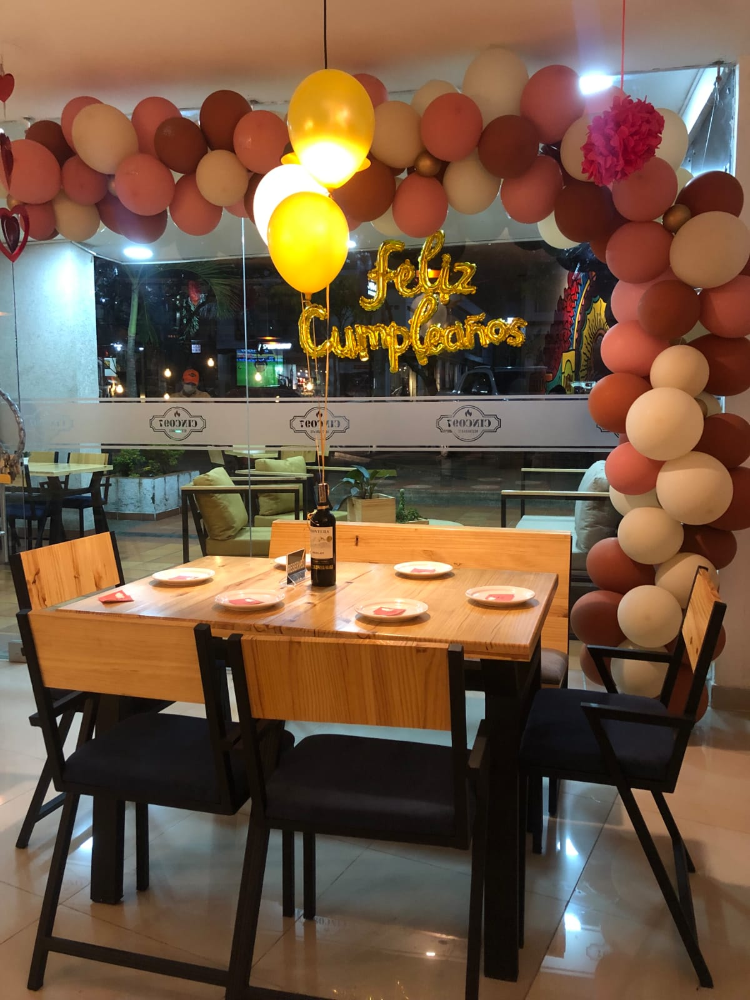

Explora
Cuatro frentes, una misma disciplina.

01
Trayectoria
Deportista de selección Colombia y Contador Público titulado.
Ver más →
02
Emprendimientos
Dos marcas activas: MONCH y DANKAI Brownies.
Ver más →03
Contaduría
Servicios profesionales con tarjeta profesional vigente.
Ver más →
04
Eventos
Organización de eventos familiares y empresariales.
Ver más →